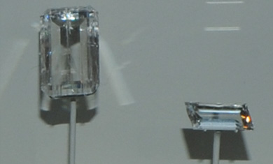

Be2BO3(OH)
These samples of hambergite are displayed in the Smithsonian Museum of Natural History. Hambergite is a oxide mineral of beryllium and boron with the composition Be2BO3(OH). The sample at left is about 3 x 5 cm and is from Imalo, Madagascar.

The hambergite gems are 40.2 and 5.9 carats and are from Madagascar. With a Mohs hardness of 7.5, they are hard enough to make durable gems.
|